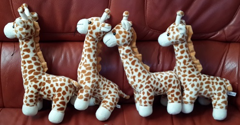

1. 대물 애착의 의의
애착물건은 매우 중요한 의미를 가집니다. 아이가 사용했던 한 가지 물건, 인형, 이불이나 담요， 포대기， 베개, 우유병， 장난감 등에 지나치게 집착하는 현상을 '대물애착'이라고 합니다. 이러한 물건들은 아이들에게 안정감과 위안을 제공하며, 종종 아이들의 성장과 발달 과정에서 중요한 역할을 합니다. 아이는 집착 물건을 항상 가지고 다니며, 집착 물건이 없어지면 매우 예민하게 반응합니다. 또한 불안이 가중되어 외부 탐색과 협동 활동에 방해를 받기도 합니다. 아이가 한 가지 물건에 지나치게 집착한다면 대물애착을 의심해 보아야 합니다.
대물애착은 다음과 같은 의미에서 대부분 나타납니다.
1) 안정감 제공
많은 영유아들이 불안하거나 슬플 때 애착물건을 찾습니다. 이는 그들에게 안정감을 제공하고 스트레스를 줄여줍니다.
2) 자아 발달
애착물건은 아이들이 자신의 정체성을 형성하는데 도움을 줄 수 있습니다. 아이들은 자신만의 독특한 물건을 가짐으로써 자기 자신에 대해 더 잘 이해하고, 자신감을 키울 수 있습니다.
3) 사회적 기술 및 감정 조절
애착물건을 통해 아이들은 감정을 표현하고 조절하는 방법을 배울 수 있습니다. 또한, 또래와의 상호작용에서 애착물건을 공유하거나 이야기하는 것을 통해 사회적 기술을 발달시킬 수 있습니다.
4) 루틴 및 안정성
일상 생활에서의 일관된 루틴을 만드는데도 애착물건이 도움을 줄 수 있습니다. 예를 들어, 잠자리에 들 때마다 특정 인형을 안고 잠들거나, 외출할 때마다 특정 물건을 가지고 가는 것 등이 이에 해당합니다.
5) 기억과 연결성
애착물건은 종종 특정 사건이나 사람과의 연결고리를 상징합니다. 아이들은 이러한 물건을 통해 사랑하는 사람들과의 관계를 기억하고 유지하는데 도움을 받을 수 있습니다.
이와 같이 애착물건은 영유아들에게 단순한 물건을 넘어서 중요한 정서적 지지를 제공하며, 그들의 성장과 발달에 중요한 역할을 합니다.

2. 애착물건에 대한 문제점 및 지도방법
애착물건은 영유아에게 많은 긍정적인 영향을 미치지만, 몇 가지 문제점도 존재합니다. 이러한 문제점들을 인식하고 적절히 관리와 지도방법이 중요합니다:
1) 과도한 의존
아이가 애착물건에 지나치게 의존하게 되면, 자기 조절 능력이나 독립성 발달에 방해가 될 수 있습니다. 예를 들어, 애착물건 없이는 잠을 잘 수 없거나, 일상 활동에 참여하는 데 어려움을 겪을 수 있습니다.
2) 분실 또는 손상 문제
애착물건이 손상되거나 분실될 경우, 아이는 상당한 스트레스와 불안을 경험할 수 있습니다. 이러한 상황은 아이에게 큰 정서적 충격을 줄 수 있으며, 때로는 장기적인 영향을 미칠 수도 있습니다.
3) 사회적 상호작용 제한
어떤 경우에는 아이가 애착물건에 너무 집중하여 다른 아이들과의 상호작용이나 새로운 활동에 참여하는 것을 꺼리게 될 수 있습니다. 이는 사회적 기술의 발달을 저해할 수 있습니다.
4) 위생 문제
천으로 된 인형이나 담요와 같은 애착물건은 지속적으로 청결하게 유지하기 어려울 수 있으며, 이로 인해 위생 문제가 발생할 수 있습니다. 정기적인 세척과 관리가 필요하지만, 일부 아이들은 이를 거부할 수 있습니다.
5) 타인에 대한 의존
애착물건에 대한 의존이 강해지면, 아이가 자신의 감정을 조절하고 문제를 해결하는 데 있어 타인(예: 부모, 교사)에게 지나치게 의존하는 경향이 생길 수 있습니다.
이러한 문제점들에 대응하기 위해, 부모와 보육 교사들은 아이들이 애착물건을 적절히 사용하도록 지도하고, 필요한 경우에는 전문가의 도움을 받는 것이 좋습니다. 예를 들어, 애착물건 없이도 안정감을 느낄 수 있도록 다양한 대처 방법을 가르치거나, 애착물건에 대한 의존도를 점차 줄이는 방법 등이 있습니다.
2022.06.06 - [분류 전체보기] - 애착과 분리불안 - 자아발달, 인지와 정서의 조절력
애착과 분리불안 - 자아발달, 인지와 정서의 조절력
분리불안의 정서와 인지발달 분리불안이란 아이가 친밀하게 느꼈던 애착대상자와 멀어지거나 떨어질 때 불안해서 울음이나 몸짓으로 메달리는 불안정한 행동 등을 나타낸다. 이러한 행동은 일
think-sis.co.kr
2022.01.07 - [분류 전체보기] - 애착 형성 및 유형-안정 애착과 불안정 회피, 저항,혼란 애착
애착 형성 및 유형-안정 애착과 불안정 회피, 저항,혼란 애착
애착의 형성 및 유형의 의의 영아의 애착형성은 개인차를 보이는데 에인즈워스와 동료들(Ainsworth et al., 1978)는 ‘낯선 상황실험’을 실시하여 애착 유형을 나뉘었다. 이 실험 과정은 에피소드를
think-sis.co.kr